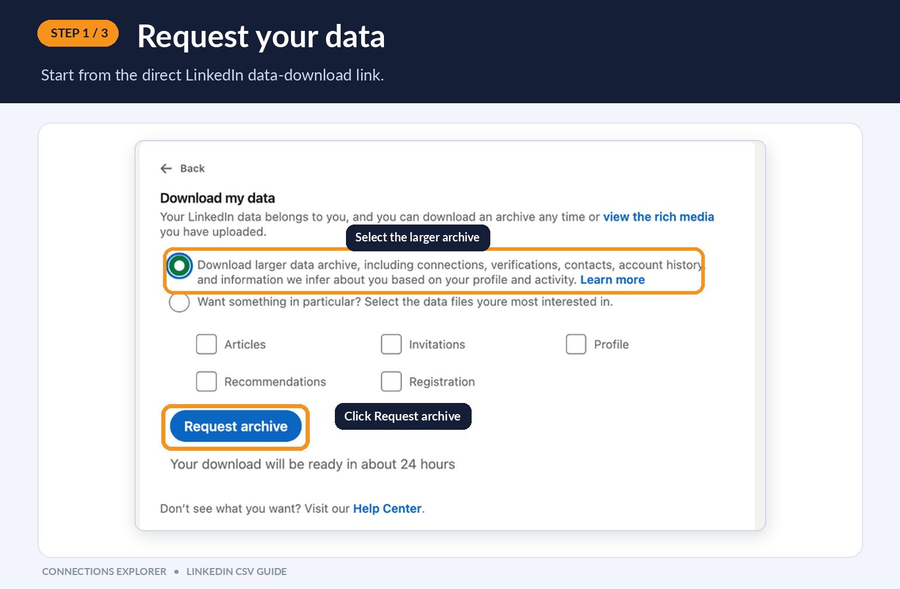
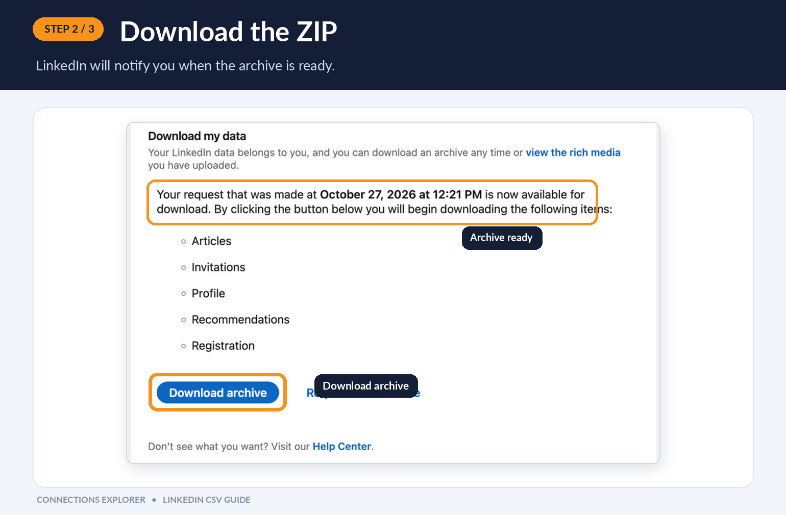
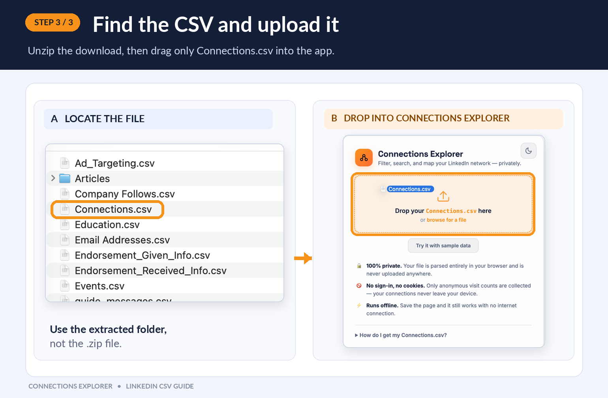

All connections
—No connections match these filters.
Filter, search, and map your LinkedIn network — privately.
Drop your Connections.csv here
or ·
On LinkedIn's download page, select Download larger data archive (or choose Connections) and click Request archive.

LinkedIn prepares your archive and sends an email notification (usually 10–30 mins). Revisit the page and click Download archive.

Unzip the downloaded folder on your computer. Look inside and drag only Connections.csv into the app.
Connections.csv. Never upload the .zip file directly.
—
No connections match these filters.